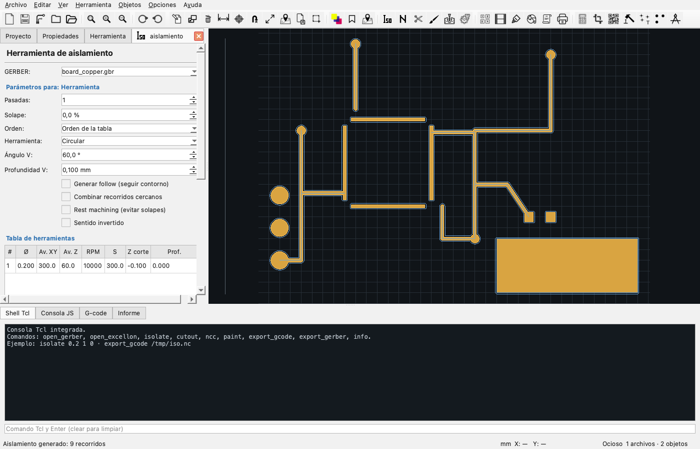

Aislamiento
Rutado de aislamiento de cobre
El aislamiento es el recorrido que separa el cobre del resto de la placa. Es la operación más importante para fresar una PCB y la que más parámetros tiene.

Cómo funciona
Para cada isla de cobre, FlatCAM calcula un contorno desplazado hacia afuera (offset). La primera pasada usa un desplazamiento de medio diámetro de fresa; las siguientes suman pasos. La fórmula de FlatCAM es:
offset(i) = Ø × ((2i + 1) / 2) − i × solape × ØCon una fresa de 0,2 mm y una pasada, el recorrido queda a 0,1 mm del cobre. Con 20 % de solape y dos pasadas, la segunda se acerca a la primera para no dejar cobre sin cortar.
Parámetros de la herramienta
| Parámetro | Qué hace | Valores típicos |
|---|---|---|
| Pasadas | Cantidad de contornos alrededor del cobre. | 1–4; más pasadas para separaciones grandes. |
| Solape (%) | Cuánto se superpone cada pasada con la anterior. | 10–30 %; 0 % deja líneas sin cortar. |
| Orden | Orden de las herramientas: tabla, diámetro, etc. | Orden de la tabla para control manual. |
| Herramienta | Forma de la fresa: circular, V-shape o bola. | Circular para fresas rectas; V para grabado. |
| Ángulo V | Ángulo de la punta V (si aplica). | 30°, 45°, 60°, 90°. |
| Profundidad V | Profundidad de la punta V; define el ancho efectivo. | 0,05–0,2 mm. |
| Generar follow | Agrega el contorno del cobre como recorrido adicional. | Para repasar bordes. |
| Combinar recorridos cercanos | No retrae entre recorridos cuyos extremos estén a menos de 0,5 mm. | Reduce tiempos y marcas. |
| Rest machining | Omite recorridos ya cubiertos por una herramienta mayor. | Al usar varias filas. |
| Sentido invertido | Invierte el sentido de giro (climb/conventional). | Según tu máquina y acabado. |
Diámetro real: la tabla debe tener el diámetro exacto de la fresa. Si ponés 0,2 mm y usás 0,3 mm, el aislamiento quedará más angosto y puede no separar el cobre.
V-shape
Una fresa en V no tiene un diámetro cilíndrico: el ancho de corte depende de la profundidad. FlatCAM calcula el diámetro efectivo:
Ø efectivo = 2 × profundidad × tan(ángulo / 2)Elegí Herramienta: V-shape, el ángulo y la profundidad. La tabla puede tener varias filas con distintas profundidades para varias pasadas.
Herramienta bola
Para fresas esféricas o de punta redondeada. El diámetro efectivo se calcula con la profundidad y el radio de la bola; se usa para grabado suave o materiales blandos.
Tabla de herramientas
Cada fila es una herramienta independiente:
| Columna | Significado |
|---|---|
| # | Número de herramienta (T1, T2…). |
| Ø | Diámetro de la fresa en la unidad activa. |
| Av. XY | Avance horizontal (mm/min). |
| Av. Z | Avance de penetración (mm/min). |
| RPM | Husillo. |
| S | Potencia láser (sólo modo láser). |
| Z corte | Profundidad final (negativa). |
| Prof. | Profundidad por pasada; 0 = una sola pasada. |
Botones: Añadir, Eliminar, Aplicar a todas, Desde DB.
Parámetros comunes
- Z de viaje, Z de cambio de herramienta, Z final.
- Dwell (pausa) tras bajar.
- X/Y finales.
- Postprocesador.
- Ignorar Z en modo láser.
Generar
- Elegí el GERBER de cobre en el selector.
- Completá la tabla (diámetro, avances, RPM, Z corte, profundidad).
- Pulsá Previsualizar para ver los recorridos.
- Revisá que no invadan pads ni agujeros.
- Pulsá Generar geometría para crear la capa de recorridos.
- Pulsá Generar CNCJob y guardá el G-code.
Valores recomendados
| Fresa | Pasadas | Solape | Z corte | Avance XY | Avance Z | RPM |
|---|---|---|---|---|---|---|
| 0,1 mm | 1–2 | 10–15 % | −0,05 a −0,08 | 100–200 | 20–40 | 12.000–18.000 |
| 0,2 mm | 1–2 | 10–20 % | −0,08 a −0,12 | 150–300 | 30–60 | 10.000–15.000 |
| 0,3 mm | 1–2 | 15–25 % | −0,10 a −0,15 | 200–350 | 40–70 | 8.000–12.000 |
Son puntos de partida: ajustá según el material, la rigidez de la máquina y la calidad de la fresa.
Problemas frecuentes
| Síntoma | Causa probable | Solución |
|---|---|---|
| Queda cobre entre pistas | Falta una pasada o solape bajo | Aumentá pasadas o solape. |
| El recorrido corta un pad | Diámetro de tabla mayor al real | Corregí el Ø. |
| La fresa no baja lo suficiente | Z corte muy alta o placa no plana | Bajá Z, nivelá la cama. |
| Se rompe la fresa | Avance Z alto, RPM baja, virutas | Bajá avance Z, subí RPM, aspirá. |
| Recorridos duplicados | Varias filas con el mismo Ø | Usá rest machining o eliminá filas. |